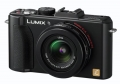

器材库 > 不可换镜头数码相机 > DMC-LX5

规格总览
发布日期
2010-07-21
厂家推荐价格
529.00 （欧元）
影像规格
影像传感器
CCD
影像传感器尺寸
1/1.63英寸
总像素
1130万
有效像素
1010万
影像处理器
维纳斯修正引擎FHD
静态图像格式
JPEG, RAW+JPEG
静态图像尺寸
[4:3] 3648×2736, [3:2] 3776×2520, [16:9] 3968×2232, [1:1] 2736×2736
画幅比
3:2, 4:3, 16:9, 1:1
短片尺寸
1280×720@30fps
防抖系统
Mega OIS防抖功能
镜头和对焦
镜头结构
10片/9组
非球面镜片
3片
焦距
5.1mm-19.2mm
等效35mm画幅焦距
24mm-90mm
最大光圈
f/2.0-3.3
光学变焦
3.8倍
数码变焦
4.5倍
对焦模式
面部 / AF追踪 / 多点(23点) / 1点 (任意 / 可伸缩)
曝光控制
测光模式
中央重点测光, 评价测光, 点测光
场景模式
肖像、柔肤、自拍肖像、风景、全景助理、运动、夜间肖像、夜景，高感光度，食物、派对、烛光、宝宝1&2、宠物、日落、高速连拍、闪光灯连拍、星空、烟火、海滩、雪景、空中摄影
快门速度
60 - 1/4000秒
曝光补偿
±2EV以1/3EV级调整
连拍
2.5fps，最多5张
闪光灯
内置闪光灯
固定
闪光涵盖范围
0.8 - 7.2m (Wide/ISO Auto), 0.3 - 4.4m (Tele/ISO Auto)
取景规格
LCD类型
彩色TFT LCD
LCD尺寸
3.0英寸
LCD像素
46万
视野率
100%
文件输入/输出
内置存储容量
40MB
存储卡
SD/SDHC, SDXC
数据接口
USB2.0
视频/音频接口
AV 输出, HDMI 输出
电源
电池
锂离子电池
续航能力
可拍摄约400张照片
外观
颜色
黑色, 白色
尺寸
109.7×65.5×43mm
重量
233g
笨笨的平凡世界2014-06-04 17:063.25 分
操作性 3.00功能性 4.00美观性 3.00趣味性 4.00耐用性 3.00性价比 3.00解像力 2.50色彩还原 3.50
promise3232014-02-16 15:294.31 分
操作性 4.00功能性 4.50美观性 5.00趣味性 4.50耐用性 4.50性价比 4.00解像力 4.00色彩还原 4.00
京华烟云2012-10-12 09:544.38 分
操作性 4.50功能性 4.50美观性 5.00趣味性 4.50耐用性 4.50性价比 4.00解像力 4.50色彩还原 3.50
tom11092012-09-11 03:034 分
操作性 3.00功能性 4.50美观性 4.50趣味性 4.50耐用性 3.50性价比 3.50解像力 4.00色彩还原 4.50
楚客2012-08-04 22:224.88 分
操作性 5.00功能性 5.00美观性 4.50趣味性 5.00耐用性 5.00性价比 5.00解像力 5.00色彩还原 4.50
紫葳2012-05-08 16:444.88 分
操作性 4.50功能性 5.00美观性 5.00趣味性 5.00耐用性 4.50性价比 5.00解像力 5.00色彩还原 5.00
莽原2011-12-22 19:294.81 分
操作性 4.50功能性 5.00美观性 5.00趣味性 5.00耐用性 5.00性价比 5.00解像力 4.50色彩还原 4.50
草丛居民2011-11-15 09:224.38 分
操作性 4.00功能性 4.50美观性 4.00趣味性 3.50耐用性 4.00性价比 5.00解像力 5.00色彩还原 5.00
阿番2011-10-30 10:33
摄漫江湖2011-09-14 16:294.94 分
操作性 5.00功能性 5.00美观性 5.00趣味性 5.00耐用性 5.00性价比 4.50解像力 5.00色彩还原 5.00
产品图 / 样片
DMC-LX5
评测 / 相关文章
- 详细内容 （存档）
- 松下旗舰数码相机LX5评测 （存档）
- 北海道试片 网友点评松下LX5 （存档）
- ［资讯］松下DMC-LX5最新固件提升10项性能 （存档）
- ［影像］看图说话：松下 LX5 （存档）
- ［行色］泡菜试机 松下LX5的台湾掠影 （存档）
- ［行情］松下黑色LX5行货报价跌至3299 （存档）
- ［资讯］2010年无忌最具人气器材出炉 （存档）
- ［资讯］无忌最具人气器材奖12月10日动态 （存档）
- ［资讯］无忌最具人气器材奖最新动态 （存档）
- ［资讯］白色版松下LX5近日到货发售 （存档）
- ［资讯］苹果系统升级 支持10款新机RAW格式 （存档）
相关文章
- ［资讯］松下DMC-LX5最新固件提升10项性能 （存档）
- ［影像］看图说话：松下 LX5 （存档）
- ［试用］松下旗舰数码相机LX5评测 （存档）
- ［行色］泡菜试机 松下LX5的台湾掠影 （存档）
- ［行情］松下黑色LX5行货报价跌至3299 （存档）
- ［资讯］2010年无忌最具人气器材出炉 （存档）
- ［资讯］无忌最具人气器材奖12月10日动态 （存档）
- ［资讯］无忌最具人气器材奖最新动态 （存档）
- ［资讯］白色版松下LX5近日到货发售 （存档）
- ［资讯］苹果系统升级 支持10款新机RAW格式 （存档）